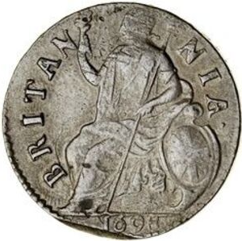

UK · 1695Britannia — meio penny · moeda.
Britannia — meio penny
Descrição curta
Reino Unido · 1695 · moeda · regime normativo.
Descrição longa
Ficha do corpus iconocrático para Britannia — meio penny: alegoria feminina como tecnologia visual do Estado, classificada no regime normativo.
Fonte & proveniência
- Crédito
- Imagem do corpus ICONOCRACIA: Britannia — meio penny.
- Direitos
- Uso acadêmico e curatorial; verificar direitos junto à instituição detentora antes de reutilização comercial.
- Licença
- Todos os direitos reservados salvo indicação específica da fonte.
Dados canônicos
Esta ficha é gerada a partir de data/corpus.json. Última geração: 2026-06-24.